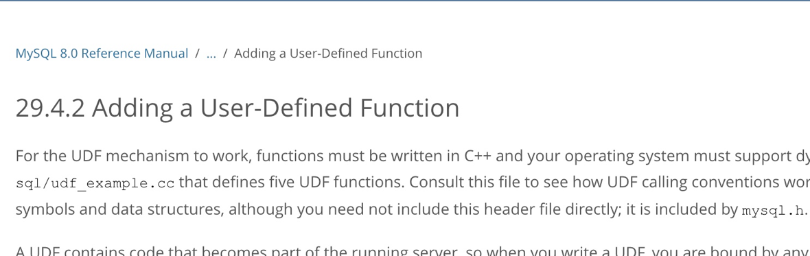
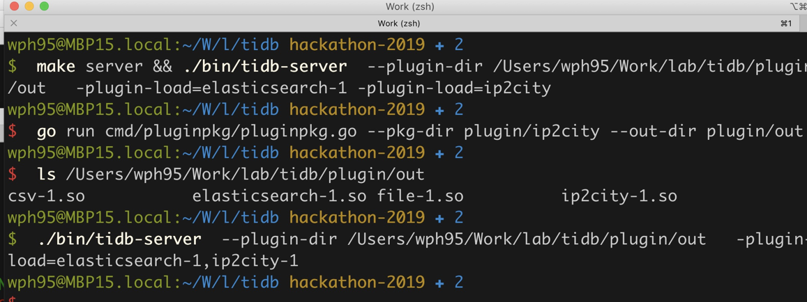
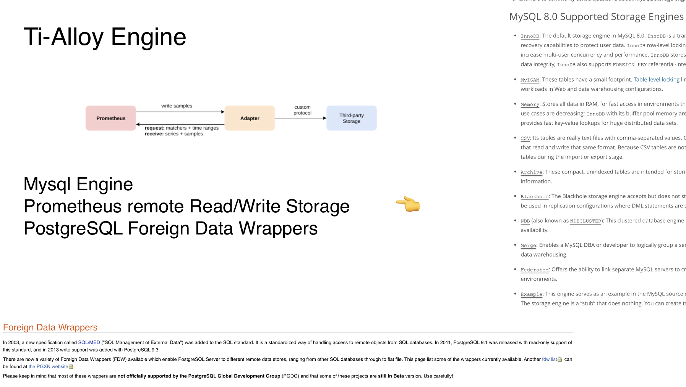
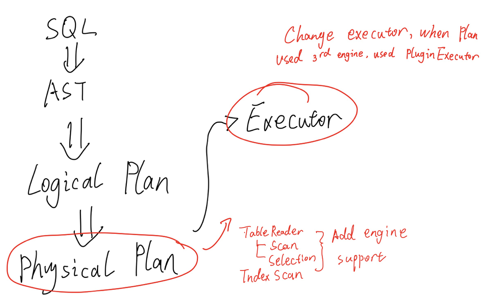
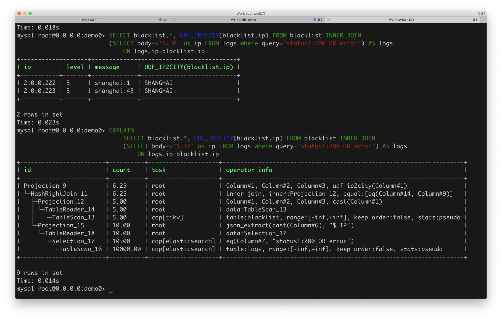
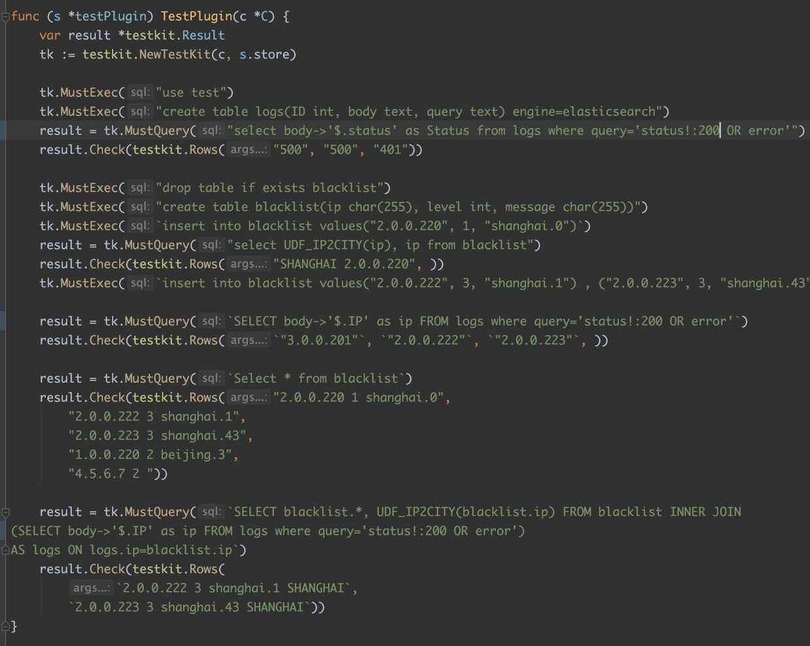
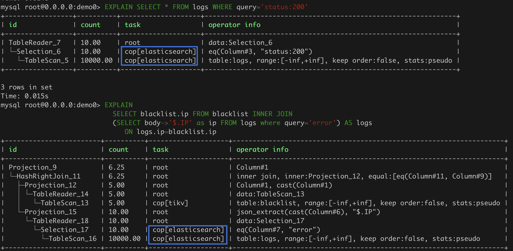
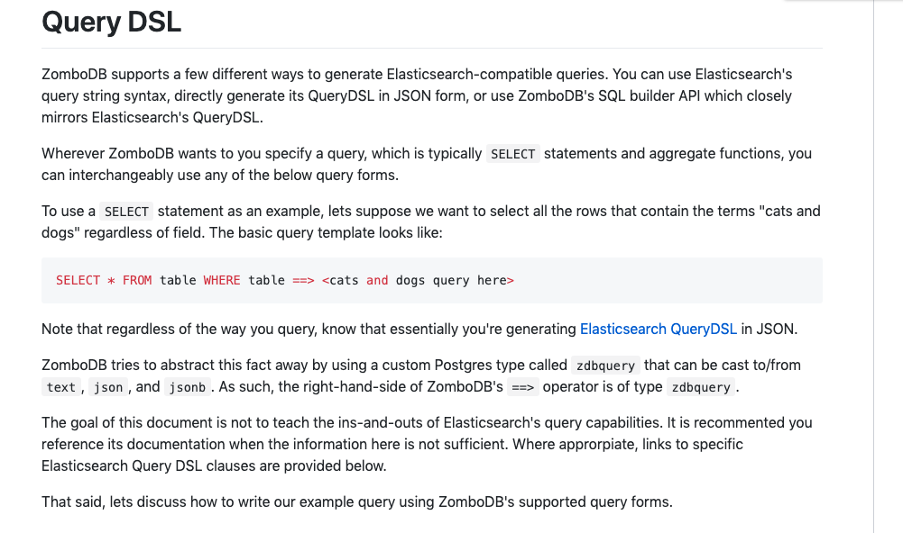
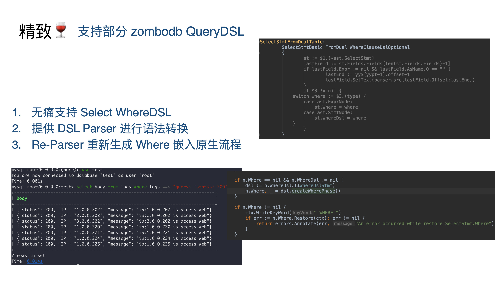

上个周末又是一次 PingCap 举办的 TiDB Hackathon，上一次某个拿了一等奖的老哥又拉我参赛。日常的对整个系统了解程度一般没什么预先准备，key-point 也不是特别出彩的东西，因此也难免 Hackathon 陪跑、Prize Skip （笑死🤣）。不过参加 Hackathon 本身就是件比较有意思的事情，因为在有限的时间内找出 key-point、对复杂的代码进行分析理解找出实现方案、写代码完成功能、做 Slide 给大家吹水，其实都是比较锻炼能力的。
在国内面试很多面试官都会对某些流行框架代码的实现方案有所要求，但是其实这方面固然重要但是只要你去看很少能有你看不懂的东西。从个人而言，可能会更看重快速了解一份陌生代码、陌生系统的设计逻辑，找出症结、获得经验方面的能力。所以可能推荐大家可以多摸摸 Hackathon 方面的鱼，还是有很多增长的。
这次由于上周一直在感冒发烧，所以这次的 Hackathon 全程是在家云的，而且由于 key-point 比较小，代码写起来也很快，因此娱乐休息在家一个没落下，感冒发烧还好了，比较开心。
“这也能云☁️？？”
这次做出的最后的结果，其实是一个 TiDB 上比较容易的拓展方案集（包括换 UDF 支持、给 TiDB 换 Store Engine、DSL 支持）。其实开始做的时候打算的内容还挺多的，不过时间太短也没都做完就选了几个点来完成了，这里简单做下记录。
（最后看了很多 dalao 的开发演示，深感在做 db 和分布式方面的能力还是有待加强，很多方案真的挺惊艳的）。
本文目录
User Defined Function 支持
方案

TiDB 一直是支持 MySQL Protocol 的，不过对于其中的一些特性也没有完全支持，其中 UDF （User Defined Function 用户自定义方法）就一直在 Github 上的 ReadMe 上写着不支持。其实从日常使用上来看 UDF 还是一个挺常见的功能一直不支持也是挺难受 orz。
这个功能其实之前的 Hackathon 里有人做过，但是明显的实现不大对劲做完之后让人更难受了。由于许多的 MySQL 内置函数，在 TiDB Parser 侧直接在 goyacc 上语法级写死了，之前看他们文章应该是拖了个新的 parser 库自己加语法做的 Create Function，这也太难受了这样的 UDF 其实很难 runtime 加进去，要不就是 parser 开洞允许另一套 UDF 处理逻辑插入，要不就真的关闭 runtime 加 udf 的功能了。
起码两年前和 Ed huang 聊，他们就希望能改善使用 goyacc 做 CodeGen 进行 Parser 构造的方案了，不过看来在 go 社区可能工业上令人信服的 Parser 框架还是不够健壮吧。
话说 debug gencode 分析文法冲突不难受么？（或许我没有掌握正确的方法。
不过其实这个问题思路解决起来也很好弄，goyacc 里面增加对 Generic Function 的文法支持，然后再在系统里肯定有个 go function 的映射 map ，增加 binding 就好了（大不了开洞）。仔细搜了下 parser.y 里面的 BNF 其实已经有 FunctionCallGeneric 的支持了：
FunctionCallGeneric:
identifier '(' ExpressionListOpt ')'
{
$$ = &ast.FuncCallExpr{FnName: model.NewCIStr($1), Args: $3.([]ast.ExprNode)}
}
看文法就是支持任意 stringlit 的方法名，和数量可变的参数列表，那其实在文法方面都不需要修改了。因此直接去找存储方法映射关系的地方就好了，简单的找一下就能发现 builtin.go 里面的 funcs 就是存储的位置：
var funcs = map[string]FunctionClass{
// common functions
ast.Coalesce: &coalesceFunctionClass{BaseFunctionClass{ast.Coalesce, 1, -1}},
ast.IsNull: &isNullFunctionClass{BaseFunctionClass{ast.IsNull, 1, 1}},
ast.Greatest: &greatestFunctionClass{BaseFunctionClass{ast.Greatest, 2, -1}},
ast.Least: &leastFunctionClass{BaseFunctionClass{ast.Least, 2, -1}},
ast.Interval: &intervalFunctionClass{BaseFunctionClass{ast.Interval, 2, -1}},
// ...
}
包含 MySQL 自带的 Function 还有 Binary Operator 都存在了这里，简单的来说只要给这个结构体和相关 field 开洞就好了，这里面存储的 FunctionClass 其实这个 Interface：
// functionClass is the interface for a function which may contains multiple functions.
type FunctionClass interface {
// getFunction gets a function signature by the types and the counts of given arguments.
GetFunction(ctx sessionctx.Context, args []Expression) (BuiltinFunc, error)
}
返回的结构是个 BuiltinFunc 的结构，然后这个 Interface 有一些诸如 EvalString, EvalInt 之类的 Function 具体处理方法，从代码来看这些内部函数为了逻辑清楚才多套了这么一层，比如说 trim 处理字符串的方法在 GetFunction 会被分成一个参数、两个参数、三个参数三种逻辑，然后对应三个 BuiltinFunc 结构体，完全处于逻辑复用考虑。
不过如果把这套完全迁移出来用于 UDF，未免比 MySQL 这种写一个 C-Function 就能用的 UDF 麻烦太多，所以就直接共享一套公用的 FunctionClass 好了，只在 BuiltinFunc 上有所区别：
func AddUserDefinedFunction(name string, class BuiltinFunc, minArgs int, maxArgs int) {
funcs[strings.ToLower(name)] = &UserDefinedFunctionClass{BaseFunctionClass{name, minArgs, maxArgs}}
userDefinedFuncs[name] = class
}
var userDefinedFuncs = map[string]BuiltinFunc{}
type UserDefinedFunctionClass struct {
BaseFunctionClass
}
func (c *UserDefinedFunctionClass) GetFunction(ctx sessionctx.Context, args []Expression) (BuiltinFunc, error) {
if err := c.VerifyArgs(args); err != nil {
return nil, err
}
if userDefinedFuncs[c.FuncName] == nil {
return nil, c.VerifyArgs(args)
}
return userDefinedFuncs[c.FuncName].Initial(ctx, args), nil
}
增加了如下的 Api，共享一套 FunctionClass 只在内部 BuiltinFunc 有区别，并且增加一个 Initial 的生命周期给去初始化相应的 Func 逻辑。因此一个 Plugin 化的 Trim UDF 其实就可以简写成这个样子：
type TrimFunction struct {
BaseBuiltinFunc
}
func (b *TrimFunction) Clone() BuiltinFunc {
newSig := &TrimFunction{}
newSig.CloneFrom(&b.BaseBuiltinFunc)
return newSig
}
func (b *TrimFunction) Initial(ctx sessionctx.Context, args []Expression) BuiltinFunc {
var argTps []types.EvalType
switch len(args) {
case 1:
argTps = []types.EvalType{types.ETString}
case 2:
argTps = []types.EvalType{types.ETString, types.ETString}
case 3:
argTps = []types.EvalType{types.ETString, types.ETString, types.ETInt}
}
bf := NewBaseBuiltinFuncWithTp(ctx, args, types.ETString, argTps...)
argType := args[0].GetType()
bf.Tp.Flen = argType.Flen
SetBinFlagOrBinStr(argType, bf.Tp)
b.BaseBuiltinFunc = bf
return b
}
func (b *TrimFunction) EvalString(row chunk.Row) (d string, isNull bool, err error) {
// 具体的 Trim 逻辑
}
整套方案说了好多话，其实实现起来都很快的，主要是想给使用者什么样的 Function 接口想了一下，简化了 BuiltinFunc 编写的一些逻辑。最后写了几个 UDF 的 Plugin 实现，增加了启动前加载 Plugin UDF 的功能，补充了相关的 Unit-Test 这个功能就 OJBK 了。
提前加载 UDF Plugin 支持：
err = plugin.ForeachPlugin(plugin.UDF, func(p *plugin.Plugin) error {
udfPlugin := plugin.DeclareUDFManifest(p.Manifest)
meta := udfPlugin.GetUserDefinedFuncClass()
expression.AddUserDefinedFunction(meta.FuncName, meta.Func, meta.MinArgs, meta.MaxArgs)
logutil.BgLogger().Info("insert udf", zap.String("function name", meta.FuncName))
return nil
})
优缺点

优点肯定是一个比较完善的 UDF 支持，没什么 Hack 的逻辑，UDF 也能 Runtime 插入使用 Plugin 的方式进行解耦。并且如上文代码所示其实插件实现也比较简洁，给插入 Function 留的接口也很方便。
不过缺点也有就是本事开放直接内部结构不是一个很安全的做法，正确的做法应该是尽量 BuiltInFunc 和外部逻辑尽管相似但是也有足够的安全隔离和转换机制支持，不过 Hackathon 上很多方案图快就是先能用就行。
Ti-Alloy Engine 替换
方案
在 UDF 的基础功能完善之上的实现就是对标 MySQL Engine、Prometheus remote Read/Write Storage、PostgreSQL Foreign Data Wrappers 之类的可替换 Storage Engine 的实现方案。 说起来也不是很稀奇，这种替换 Storage Engine 的方案其实也可以等同为一个 Proxy，之前开发过 ES、Prometheus 相关的 Proxy 方案本质上比较类似：

整体的结构图如下：

在 TiDB 里面从 SQL 的输入开始，会经过文法分析转变成等价的 AST，之后生成对应的 Logical Plan，经过一些优化逻辑的处理会生成实际执行的 Physical Plan 物理计划，这部分的 Executor 就可以增加一个 Plugin 的 Engine 支持，实质上也就是在 TableInfo 增加了一个 Engine 字段，可以指定使用对应的 Plugin Executor 进行解析。
在具体的 实现 executor/build.go 之中 buildTableReader, buildTableScan 等相关处理 Scan、Select 的部分加了钩子，根据 Engine 去选择 Plugin Engine 插入对应的流程：
type PluginScanExecutor struct {
baseExecutor
Table *model.TableInfo
Columns []*model.ColumnInfo
Plugin *plugin.Plugin
pm *plugin.EngineManifest
meta *plugin.ExecutorMeta
}
type PluginInsertExec struct {
// ...
}
type PluginSelectionExec struct {
// ...
}
// 插入的处理方法
这个 PluginScanXXX 相关的部分会连接一个对应的 Plugin 实现完善对应的接口：

这个是对应的 Engine Plugin 所需要实现的部分接口，可以 Hook 在流程处理上的部分 Executor 的操作，实现插入引擎的功能，这部分的协议接口的支持也是主要参考了上述所支持的接口定义。去 plugin 部分实现这些插件就可以替换存储引擎了：
package main
import (
"bufio"
"context"
"fmt"
"github.com/pingcap/parser/model"
"github.com/pingcap/tidb/expression"
"github.com/pingcap/tidb/plugin"
"github.com/pingcap/tidb/util/chunk"
"io"
"os"
"strconv"
"strings"
)
type ReadExecutor struct {
pos int
}
var Files = make(map[string]*bufio.Reader)
func OnReaderOpen(ctx context.Context, meta *plugin.ExecutorMeta) error {
path := fmt.Sprintf("/tmp/%s.log", meta.Table.Name.L)
file, err := os.Open(path)
if err != nil {
return err
}
Files[meta.Table.Name.L] = bufio.NewReader(file)
return nil
}
func OnReaderNext(ctx context.Context, chk *chunk.Chunk, meta *plugin.ExecutorMeta) error {
chk.Reset()
reader := Files[meta.Table.Name.L]
line, _, err := reader.ReadLine()
if err != nil {
if err == io.EOF {
return nil
}
return err
}
es := strings.Split(string(line), ",")
i, err := strconv.Atoi(es[0])
if err !=nil {
chk.AppendNull(0)
} else {
chk.AppendInt64(0, int64(i))
}
chk.AppendString(1, es[1])
return nil
}
var InsertFiles = make(map[string]*os.File)
func OnInsertOpen(ctx context.Context, meta *plugin.ExecutorMeta) error {
path := fmt.Sprintf("/tmp/%s.log", meta.Table.Name.L)
f, err := os.OpenFile(path, os.O_APPEND|os.O_CREATE|os.O_WRONLY, 0644)
InsertFiles[meta.Table.Name.L] = f
return err
}
func OnInsertNext(ctx context.Context, rows [][]expression.Expression, meta *plugin.ExecutorMeta) error {
for _, row := range rows {
b := strings.Builder{}
for _, e := range row {
b.WriteString(e.String() + ",")
}
b.WriteString("\n")
_, err := InsertFiles[meta.Table.Name.L].WriteString(b.String())
if err != nil {
return err
}
}
return nil
}
func OnInsertClose(meta *plugin.ExecutorMeta) error {
return InsertFiles[meta.Table.Name.L].Close()
}
func OnCreateTable(tblInfo *model.TableInfo) error {
path := fmt.Sprintf("/tmp/%s.log", tblInfo.Name.L)
f, err :=os.Create(path)
if err != nil {
return err
}
return f.Close()
}
func OnDropTable(tblInfo *model.TableInfo) error {
path := fmt.Sprintf("/tmp/%s.log", tblInfo.Name.L)
return os.Remove(path)
}
比如上述的代码，可以理解为一个将存储信息存为 CSV 文件的一个最小实现，在最后的实现上还实现了一个简单的 elasticsearch proxy（Mock Skip）用来做演示 demo，实现的几个 UDF、Engine Plugin 也都做了相应的 unit-test，其实这里能做的事情也很多各种下推支持啊什么的，可优化空间还很大。
Show Case
这里的 Show Case 主要就是演示 UDF 支持和普通的 Table 和 ES Engine Table 的相关 join、select 功能，场景是首先假定了一张替换 Engine 的 ES 表，存的是 logs 日志数据，包含 ip、status code、以及相关的连接 message，另一张表就是普通的表，存的是 blacklist 的具体黑名单的数据，包含 ip、危险等级 level、以及相关的风险信息。
然后通过取 join 找出 logs 里面的被 block 的信息，展示 ES demo 的 Selection 下推支持、UDF 实现的 ip2city 的支持以及 Store 的 Engine 支持：

这里面 es 的 selection query 是一个虚拟的字段，把实际的 query string 下推到 ES 的 query 流程上去，并且整体的 Engine 实现支持最后和普通的 blacklist 进行 join ，通过 UDF 定义的 UDF_IP2CITY 把 ip 映射到对应的城市上去（虚构的）。一个比较简单的 show case ，下面的 explain 命令展示了对应的计算流程。
根据测试有限的逻辑，这里的 case 也提供了对应的测试：

之前也提到了 TableInfo 的插入字段，这部分的实现方案处理也比较精致，在打印状态里能清晰的看出某个 table 属于哪个计算引擎：

在使用 explain 打印计算流程的 task 上也能看到对应 Engine 的归属方案：

优缺点
通过 Plugin 和在内部下钩子的方式，实现 Storage Engine 的实现还是比较清晰的，不过多种对应 Engine 的 Api 都要分别实现，如果能有更好的 Engine Adapter 通过 GRPC 连接 remote engine 的话，其实实现会更加方便和好看的。或者更进一步提供 Custom Physical Plan 、 Logic Plan 的实现方案，增强系统的拓展性。
彩蛋：Where DSL 支持
方案
上面的实现都是比较功能性的支持，但是闲的没事也想做点看起来炫酷能讲的点，这里也简单的实现了一个针对 Where DSL 的支持，这里对标的是 zombodb 其中实现的部分 Query DSL：
https://github.com/zombodb/zombodb/blob/master/QUERY-DSL.md

不过这里只支持了一个 QueryString，String 格式是比较 ES-Like 的 StringQuery 的样式，里面比较麻烦的 ES JSON 风格的、Query Builder 的也实在比较麻烦就没有做。
整体上实现的 Where DSL 需要支持的样式比较类似于这个样子：
Select <fields> from <tables> where <table> ===> 'field1: xxxx AND field2: [1 TO 1000] OR ...'
这样的文法从结构上也可以看出来，对应的 DSL String 并没有放到整体的 Parser 里面去分析，毕竟在现有的 goyacc 的代码实现之下，支持一个 StringQuery 的相关支持也是有点心累所以这一层就只按照 StringLit 来处理就 OJBK。增加的 label 结构如下：
WhereDsl:
"WHERE" TableName "==>" stringLit
{
$$ = &ast.WhereDslStmt{Parser: parser,Table: $2.(*ast.TableName), DslString: $4}
}
这个比较简单，为了与之前的 Where Phase 的逻辑进行兼容其实可以添加到之前的 WhereClauseOptional 之中比较好：
WhereClauseOptional:
{
$$ = nil
}
| WhereClause
{
$$ = $1
}
但是原生的 Where Phase 的位置实在是太多了，这里我们主要是想要处理 Select 子句的逻辑，所以可以重新定义一个 Label 替换 Selection 里面的 Where Phase：
WhereClauseDslOptional:
{
$$ = nil
}
| WhereDsl
{
$$ = $1
}
| WhereClause
{
$$ = $1
}
这里需要增加一个 WhereDSL 所需要的 AST Node：
type ParseInterface interface {
ParseSpecExpr(exprDsl string) (ExprNode, error)
}
type WhereDslStmt struct {
stmtNode
Table *TableName
Parser ParseInterface
DslString string
Where ExprNode
}
func (n *WhereDslStmt) Restore(ctx *RestoreCtx) error {
// TODO : convert dsl string to where syntax and write where
return nil
}
func (n *WhereDslStmt) Accept(v Visitor) (Node, bool) {
newNode, skipChildren := v.Enter(n)
if skipChildren {
return v.Leave(newNode)
}
n = newNode.(*WhereDslStmt)
return v.Leave(n)
}
替换到对应的 Yacc Selection 部分：
SelectStmtFromDualTable:
SelectStmtBasic FromDual WhereClauseDslOptional
{
st := $1.(*ast.SelectStmt)
lastField := st.Fields.Fields[len(st.Fields.Fields)-1]
if lastField.Expr != nil && lastField.AsName.O == "" {
lastEnd := yyS[yypt-1].offset-1
lastField.SetText(parser.src[lastField.Offset:lastEnd])
}
if $3 != nil {
switch where := $3.(type) {
case ast.ExprNode:
st.Where = where
case ast.StmtNode:
st.WhereDsl = where
}
}
}
SelectStmtFromTable:
SelectStmtBasic "FROM"
TableRefsClause WhereClauseDslOptional SelectStmtGroup HavingClause WindowClauseOptional
{
st := $1.(*ast.SelectStmt)
st.From = $3.(*ast.TableRefsClause)
lastField := st.Fields.Fields[len(st.Fields.Fields)-1]
if lastField.Expr != nil && lastField.AsName.O == "" {
lastEnd := parser.endOffset(&yyS[yypt-5])
lastField.SetText(parser.src[lastField.Offset:lastEnd])
}
if $4 != nil {
switch where := $4.(type) {
case ast.ExprNode:
st.Where = where
case ast.StmtNode:
st.WhereDsl = where
}
}
if $5 != nil {
st.GroupBy = $5.(*ast.GroupByClause)
}
if $6 != nil {
st.Having = $6.(*ast.HavingClause)
}
if $7 != nil {
st.WindowSpecs = ($7.([]ast.WindowSpec))
}
$$ = st
}
这里面由于本身 Where 子句扔进 AST 部分的是 Expr 但是一个 WhereDSL 的 Ast Node 是一个 StmtNode 所以这里的赋值要分门别类进行处理。至此在 Parser 层的文法上已经支持了 Where <tableName> ===> <Query DSL> 的功能，但是本身的功能还是没有。
前文也说过，SQL => Ast => Plan 的流程，似乎实现这个功能就需要实现一个精简的 Query DSL Parser，然后嵌套生成出对应的 Logical Plan 才能用，但是这样的实现方式在 Hackathon 未免太不经济，而且需要 parser 侧和 tidb 侧进行联调，比较麻烦。
那我们可以换一种简单的思路，让 “凯撒的归凯撒，上帝的归上帝”，在 Parser 层生成的语法糖就不要到 DB 层再胡搞毛搞了，尽量在 Parser 层就完成这个转换为 Ast Node 的功能生成正常的 Plan ，毕其功于一役。因此仅需要实现一个简单的 DSL Parser ，此处默认了 Query DSL 是 field 组成的 list，支持 and or 之类的连接词的文法。那么通过对每部分 field 的转换，就能生成出一个 DSL => Origin Where Phase 的流程，有了正常的 Where 语句支持就可以吧 DSL 语法糖的部分化简在了 Parser 层而不会去写很多 Plan 的生成方案。
所以整体的流程大概是这样：
Where DSL => (Field Query List <With AND, OR>) => Where Phase Expr => Origin Plan Generator
因此简单的拖了个 go 下的 parserc 库（吐槽一下没泛型全是 Interface 真滴难用）简单支持几个文法：
var (
_string = StringLit(`'`)
_number = NumberLit()
_between = Seq("[", _number, "TO", _number, "]")
_label = Regex("[a-zA-Z][a-zA-Z0-9]*")
_result = Any(_string, _number, _between)
_term = Seq(_label, ":", _result)
_op = Any(Bind("and", nil), Bind("or", nil))
_andOp = Seq(&_term, Some(Seq(_op, &_term)))
DslPhaseParser = Maybe(_andOp)
)
上文省略了 Where 的生成过程仅展示了 Parser Combinator 的部分没有展示具体的生成过程，不过简单的可以看出支持 string、number、between 文法以及多个 labels 支持。
但是上文也说了对 Where Stmt 进行处理的时候，Where 本身是一个 ExprNode，也就是 Where 关键字后面的那堆 Query Expr，因此我们还是要从 Field Query String 生成出 ExprNode，但是如果手动构造浩如烟海的 AstNode 怕不是要累死，因此我们可以考虑一个比较 Hack 的方案，Re-Parser。
重新通过 parser 处理生成出一个具体 Stmt 的 Expr 部分，然后嵌入到流程之中，这也就是上面那个 ParserInterface 是用来干什么的，直接使用真的是循环引用要人命，Ast、Expression 和 Parser 包根本没法解耦，然后增加下面这个逻辑：
func (n *WhereDslStmt) createWherePhase() (ExprNode, error) {
if n.Where != nil {
return n.Where, nil
}
result, _ := dsl.ExprParser(n.DslString)
exprNode, _ := n.Parser.ParseSpecExpr(result)
n.Where = exprNode
return exprNode, nil
}
这里通过 DSL Parser 生成的 Result ，重新被丢进了 ParserSpecExpr 的方法中进行重新生成 Where Node，这里 Node 所所引导的 Parser 就是整体的 Parser 实现，并且提供对应 ParseSpecExpr 的方法功能。再来看 ParseSpecExpr 这个方法：
func (p *Parser) ParseSpecExpr(exprDsl string) (ast.ExprNode, error) {
exprParser := New()
sourceSQL := fmt.Sprintf("select %s", exprDsl)
extractNodeFunc := func(node ast.Node) ast.ExprNode {
return node.(*ast.SelectStmt).Fields.Fields[0].Expr
}
stmt, err := exprParser.ParseOneStmt(sourceSQL, "", "")
if err != nil {
return nil, err
}
return extractNodeFunc(stmt), nil
}
这个处理方式也是比较 Hack 的，把生成的 Where Phase 直接生成一个 Selection 语句，然后拿出其中的第一个 Expr，由于 Selection 语句是固定的，所以这个取值也是稳定的不会有取不出来的情况。这样重新生成的 WhereStmt 就会被重新挂在在 Selection 的结构体里：
type SelectStmt struct {
dmlNode
resultSetNode
// SelectStmtOpts wraps around select hints and switches.
*SelectStmtOpts
// Distinct represents whether the select has distinct option.
Distinct bool
// From is the from clause of the query.
From *TableRefsClause
// Where is the where clause in select statement.
Where ExprNode
WhereDsl StmtNode
// ... other fields
}
// Restore implements Node interface.
func (n *SelectStmt) Restore(ctx *RestoreCtx) error {
// ...
if n.Where == nil && n.WhereDsl != nil {
dsl := n.WhereDsl.(*WhereDslStmt)
n.Where, _ = dsl.createWherePhase() // 重新生成了 Where Stmt 嵌入流程
}
if n.Where != nil {
ctx.WriteKeyWord(" WHERE ")
if err := n.Where.Restore(ctx); err != nil {
return errors.Annotate(err, "An error occurred while restore SelectStmt.Where")
}
}
// ...
}
// Accept implements Node Accept interface.
func (n *SelectStmt) Accept(v Visitor) (Node, bool) {
// ...
if n.Where == nil && n.WhereDsl != nil {
dslNode := n.WhereDsl.(*WhereDslStmt)
n.Where, _ = dslNode.createWherePhase()
}
if n.Where != nil {
node, ok := n.Where.Accept(v)
if !ok {
return n, false
}
n.Where = node.(ExprNode)
}
// ...
}
因此在系统流程通过 Visitor 对 Select Stmt 进行分析的 Restore 和 Accept 流程之中，可以直接通过 DSL 语法糖重新生成 Where Stmt 的方式实现了这种支持。最终实现了我们的目标，不动 DB 只在 Parser 层完成任务。
Show Case


最后的这个演示例子也和上面 Ti-Alloy Engine 替换的部分有所关联，这里还是那个 logs 的 ES Engine 然后此处使用了上面我们支持的 query 实现 + Where DSL 的方式实现了这个功能，这里可以看到 select 到了所以状态码是 200 的 log 日志信息。
Flags & Summary
最后惯例性的留下了一些 Flags ，其中的一些点前文也都提到了。
总结：虽然和某些 dalao 相比这次的 key-point 选题不够有亮点，也成功实现了 Hackathon 陪跑、Prize Skip。不过和朋友参加 Hackathon 本身的经验也比较有趣，提出想法，快速的实现解决问题，对我而言快速结合对 DB、Parser 的已有知识对大型系统的实现方式进行分析和修改实现更是弥足珍贵的锻炼。之后如果休息日不忙的 Hackathon 估计会参加，如果能在家 ☁️ 就更好了（云总警告⚠️）。写下这篇文章，权做总结与锻炼 QwQ